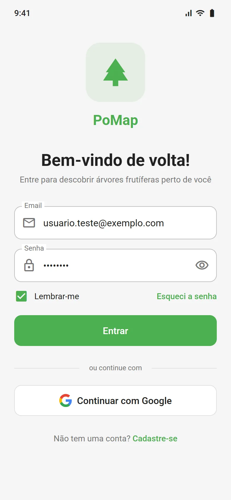
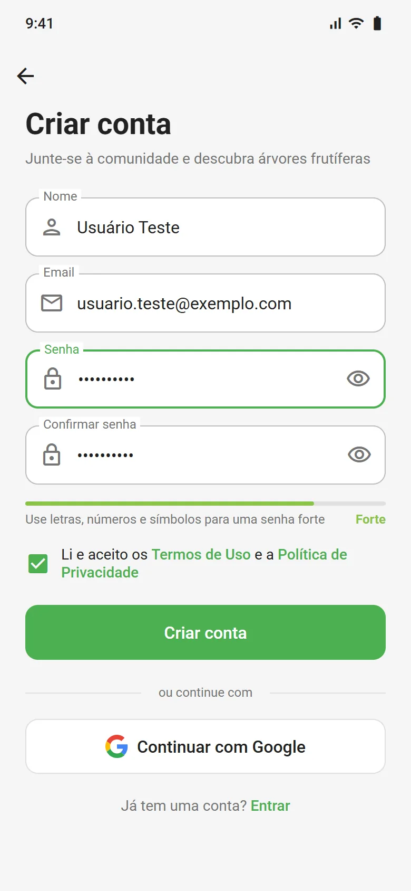
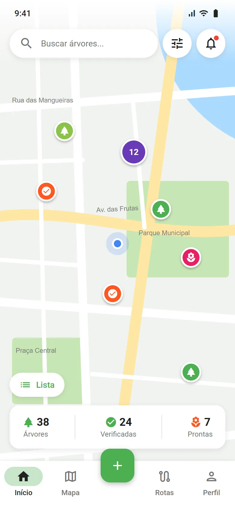
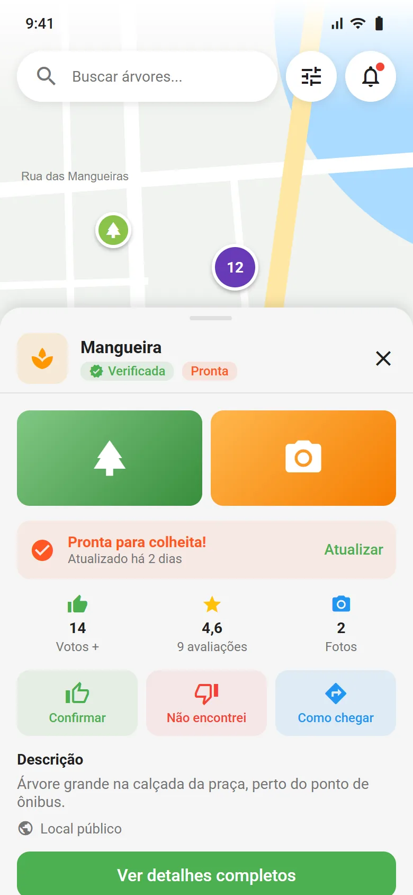
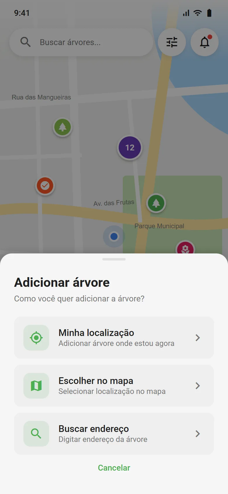
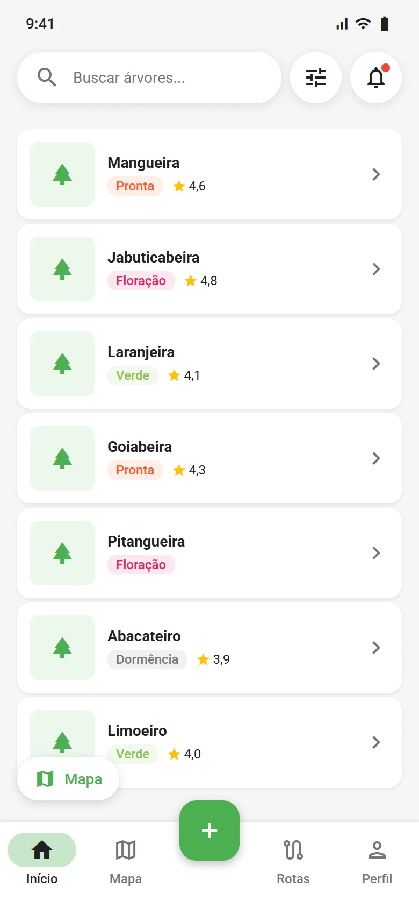
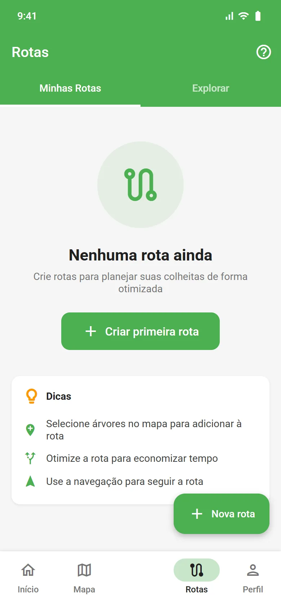
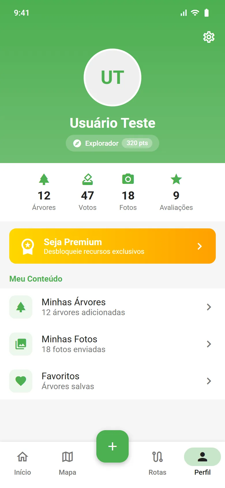
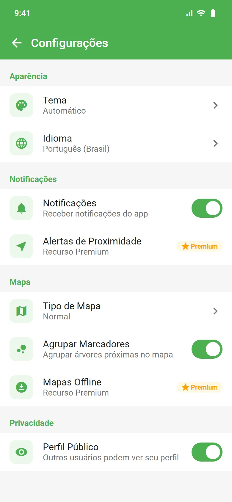

PortfólioAplicativos, jogos e automação
PoMap
Aplicativo de celular para encontrar e compartilhar árvores frutíferas em espaço público, com mapa, cadastro por foto e localização, rotas de colheita e alertas de proximidade.
- Tipo
- Produto próprio, em desenvolvimento
- Plataformas
- Android e iOS
- Idiomas
- Português e inglês
- Modelo
- Gratuito e assinatura
Telas
Telas reproduzidas em HTML a partir do código Flutter, com as cores, os textos e o layout do app.


















Fluxo de navegação
Rotas definidas em app_router.dart (go_router). 16 telas ainda são marcadores de posição no código.
Funcionalidades
- MapaÁrvores próximas com cor por fase de colheita: dormência, floração, frutos verdes e pronta.
- CadastroLocal pela posição atual, pelo mapa ou por endereço, com foto e tipo de árvore.
- ValidaçãoVotos de confirmação, notas de 1 a 5 e situação verificada, pendente ou disputada.
- Tipos45 tipos e 51 subtipos de carga inicial; tipo novo passa por votação e aprovação.
- RotasRoteiro de colheita entre árvores, com distância, tempo estimado e progresso.
- ReputaçãoSeis níveis, de iniciante a guardião, por pontos de contribuição.
- AssinaturaAlertas de proximidade e mapas offline no plano pago.
Controle de custos
Limites para manter o custo do Firebase sob controle.
Limite diário
40.000 leituras e 15.000 escritas no Firestore, 500 chamadas de rota e 1 GB de fotos.
Modo econômico
O relatório diário avisa a administração; o alerta de orçamento liga o modo econômico na configuração do app.
Modo de emergência
O alerta de orçamento liga o modo de emergência e registra o motivo.
Limites em app_config.dart; regras nas funções onBudgetAlert e dailyUsageReport.